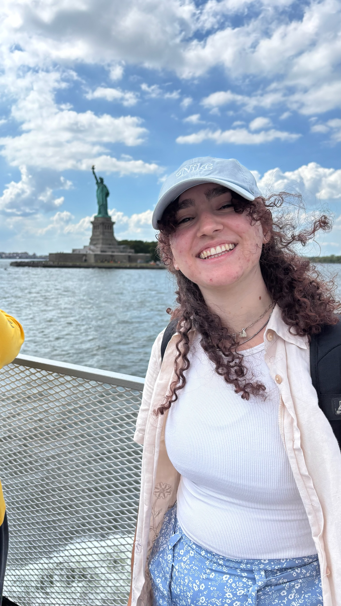

Giovanna Marin Pereira
About me
Hi! My name is Giovanna, I was born in Brazil but in 2020 my family and I moved to Italy. I really like to take photos, and I have a semi-professional camera that I take with me on every trip. I served in the Salt Lake City Temple Square and Philadelphia Pennsylvaia missions. My favorite color is purple, as you can see by the colors of the site. My favorite season is winter because I can't stand hot weather. We are four people at home, my parents, my brother and I. We also have four cats and one dog.
Italy

Italy, officially the Italian Republic, is a country in southern and western Europe. It consists of a peninsula that extends into the Mediterranean Sea, with the Alps on its northern land border, as well as nearly 800 islands, notably Sicily and Sardinia. Text source: Wikipedia
The official flag of Italy
My Hobbies
I really like to photograph Italian achtecture, nature and spontaneous portraits. I wanted to display some of my favorite pictures I took.